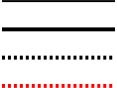
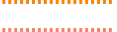
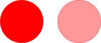
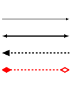
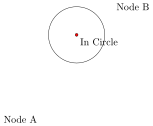

\documentclass{standalone} \usepackage{tikz} \begin{document} \begin{tikzpicture} <---- Your code goes here ---> \end{tikzpicture} \end{document}
\documentclass{article} \usepackage{tikz} \begin{document} \begin{tikzpicture} \draw (0,0) -- (4,4); \end{tikzpicture} \end{document}
\documentclass{article} \usepackage{tikz} \begin{document} \begin{tikzpicture} \draw (-5.5,3) rectangle (0.5,-0.5); \end{tikzpicture} \end{document}
\documentclass{article} \usepackage{tikz} \begin{document} \begin{tikzpicture} \draw (-5.5,-0.5) -- (-5.5,3) -- (0.5,3) -- (0.5,-0.5) --cycle; \end{tikzpicture} \end{document}
\documentclass{article} \usepackage{tikz} \begin{document} \begin{tikzpicture} \draw (-2,2) ellipse (1 and 0.5); \draw (1,2) ellipse (1 and 1); \end{tikzpicture} \end{document}
\documentclass{article} \usepackage{tikz} \begin{document} \begin{tikzpicture} \draw (0,0) .. controls (0,4) and (4,0) .. (4,4); \end{tikzpicture} \end{document}
\documentclass{article} \usepackage{tikz} \begin{document} \begin{tikzpicture} \draw[line width=2] (0,0) -- (4,0); \draw[line width=4] (0,-1) -- (4,-1); \draw[line width=4, dashed] (0,-2) -- (4,-2); \draw[red, line width=4, dashed] (0,-3) -- (4,-3); \end{tikzpicture} \end{document}

black, blue, brown, cyan, darkgray, gray, green, lightgray, lime, magenta, olive, orange, pink, purple, red, teal, violet, white, yellow
\definecolor{new_orange}{RGB}{255,127,100}
Example:
\documentclass{article} \usepackage{tikz} \begin{document} \begin{tikzpicture} \definecolor{new_orange}{RGB}{255,127,100} \draw[orange, line width=4, dashed] (0,0) -- (4,0); \draw[new_orange, line width=4, dashed] (0,-1) -- (4,-1); \end{tikzpicture} \end{document}

\documentclass{article} \usepackage{tikz} \begin{document} \begin{tikzpicture} \definecolor{new_orange}{RGB}{255,127,100} \draw[color=red, fill=red](0,0) circle (1.5); \draw[color=red, fill=red!40](4,0) circle (1.5); \end{tikzpicture} \end{document}

\documentclass{article} \usepackage{tikz} \usetikzlibrary{arrows} \begin{document} \begin{tikzpicture} \draw[-latex,line width=1] (0,0) -- (4,0); \draw[latex-latex,line width=2] (0,-1) -- (4,-1); \draw[triangle 45-,line width=2, dashed] (0,-2) -- (4,-2); \draw[diamond-open diamond,red, line width=2, dashed] (0,-3) -- (4,-3); \end{tikzpicture} \end{document}

\documentclass{article} \usepackage{tikz} \begin{document} \begin{tikzpicture} \node (Node A) at (0,0) {Node A}; \node (Node B) at (4,4) {Node B}; \draw[fill=red] (2,3) circle (0.05cm); \draw (2,3) circle (1cm) node[anchor=north west] {In Circle}; \end{tikzpicture} \end{document}

anchor options:
\documentclass{article} \usepackage{tikz} \begin{document} \begin{tikzpicture} \node (origin) at (0,0) {~}; \draw (origin.center)-- +(3cm,5cm) -- +(3cm,0cm)--cycle; \draw (origin.center)+(5cm,2cm) circle (1cm); \end{tikzpicture} \end{document}